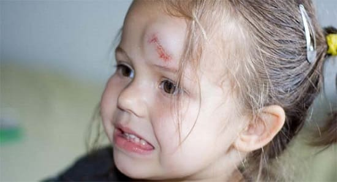
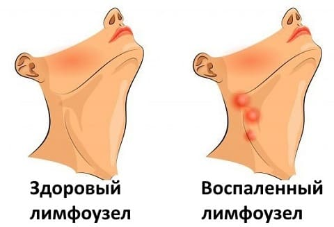
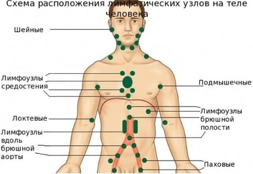

У детей шишки могут быть на любом участке тела, и обычно заботливые родители начинают волноваться. Вот ваш экспресс-курс «шишковедения», путешествие по телу вашего ребенка, чтобы узнать причины появления этих шишек.
Увеличенные лимфатические узлы. Лимфатические узлы — часть иммунной системы организма, которая производит белые кровяные клетки и другие вещества, борющиеся с инфекцией. Обычно они размером с горошину и больше всего выступают в области затылка, за ушами, под челюстью, в подмышках и в паховой области. Когда есть инфекция и даже просто царапина или раздражение на коже рядом с участком, где расположены лимфоузлы, они увеличиваются в несколько раз и могут стать болезненными. Вы можете прощупать эти крошечные узлы на затылке и шее даже у трехмесячных детей. Иногда, когда лимфоузлы борются с расположенной рядом инфекцией, они сами могут воспалиться, как, например, узлы под челюстью при инфекции миндалин. Признаками того, что воспаленным лимфоузлам необходима медицинская помощь, являются: покраснение кожи над узлом, увеличение узла в два-три раза, болезненность при касании, из-за чего ваш ребенок вздрагивает, когда вы осторожно нажимаете на узел.
СОВЕТ ДОКТОРОВ СИРС: ПЕРИОДИЧЕСКИ ПРОВЕРЯЙТЕ ЛИМФОУЗЛЫ Заведите привычку ощупывать лимфоузлы ребенка и обычные шишки. Если вы чувствуете или видите заметные изменения или любые из перечисленных ниже признаков, вызывающих беспокойство, сообщите об этом своему врачу. |

Шишки, появившиеся после травмы. Ваш ребенок ударился головой и через неделю или две вы замечаете шишку на лбу. Когда кожа плотно прижимается к подлежащей кости — что и случается при падении, — часто происходит небольшое кровотечение под кожу. Кровь застывает в твердую массу, образуя шишку. Когда жир плотно сжат, он тоже затвердевает. Поэтому зачастую можно нащупать твердую шишку в том месте, на которое упал ребенок или где была сдавлена ткань. Эти безобидные шишки рассасываются в течение года. Они могут появиться на любом участке тела ребенка.
Шишки в паховой области. Большинство шишек, которые вы нащупываете в паховой области у ребенка, являются обычными лимфатическими узлами, которые могут увеличиваться, когда на ногах или ступнях появляются воспаления или царапины. Большая шишка, размером примерно с большой палец, может быть паховой грыжей.
Шишки на груди. Шишечки размером в горошину в околососковом кружке (темной области вокруг соска) — обычная безобидная особенность, появляющаяся в два периода развития ребенка. Вскоре после рождения, из-за действия гормонов, противодействующих плаценте, у многих младенцев (у мальчиков и девочек) появляются крошечные, похожие на пузырьки шишечки вокруг сосков. Они обычно проходят в течение нескольких месяцев. Следующий период появления шишек на груди наступает у девочек в возрасте от 8 до 10 лет, когда у них начинается половое созревание. Ожидайте появления болезненных шишечек вокруг сосков.
Осматривая 8-летних девочек, мы практически всегда готовим ребенка и его родителей к тому, что у их дочери могут появиться крошечные болезненные шишки вокруг соска. Это нормальное разрастание железистой ткани растущих молочных желез. Мы говорим девочке: «Эти шишки нормальные и означают, что ты развиваешься и начинаешь становиться похожей на маму». Шишки на груди могут инфицироваться; если они становятся болезненными, быстро увеличивающимися, а ребенок вздрагивает, когда вы до них дотрагиваетесь, лучше обратиться с этой проблемой к врачу. |
Шишки на грудной клетке. Попытайтесь не паниковать, если нащупаете костистую шишку размером с горошину на конце грудины ребенка. Это нормальный конец грудины. Существуют нормальные вдавления и выпуклости, как, например, пупки. У некоторых младенцев, особенно у очень худых, конец грудины выступает больше. По мере того как ребенок растет, эта шишка, как правило, становится частью остальной грудины и будет менее различима. Не стоит беспокоиться или лечить.

КОГДА БЕСПОКОИТЬСЯ
Внешний вид и ощупывание шишки могут подсказать вам, надо ли обращаться с этими тревогами к врачу. Как правило, мягкая, круглая, однородная, немного болезненная шишка, которая легко двигается под кожей, — не повод для беспокойства. Но шишка неправильной формы, твердая, не болезненная, которая кажется приросшей к подлежащим тканям, должна насторожить, и ее необходимо показать врачу. Если вы не уверены в опасности шишки, осматривайте и ощупывайте ее, чтобы проследить, изменяется ли она.
Здоровье ребенка от докторов Сирс / Сирс У. и др.